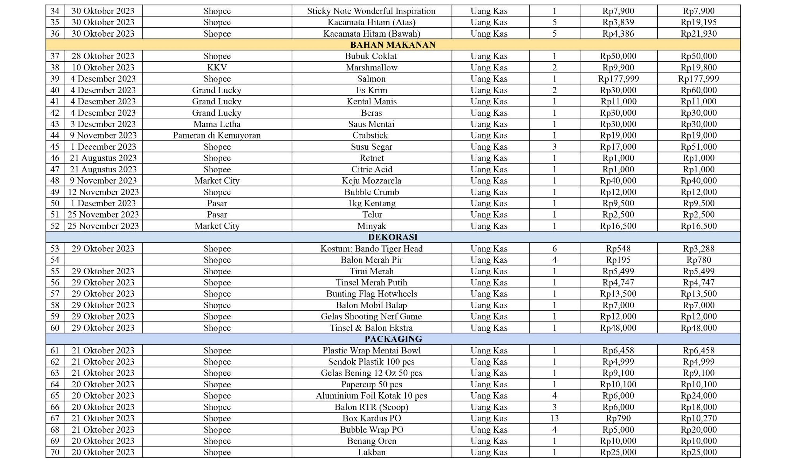
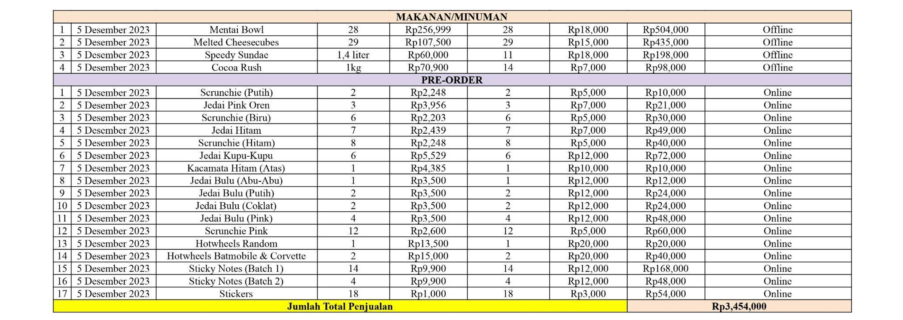
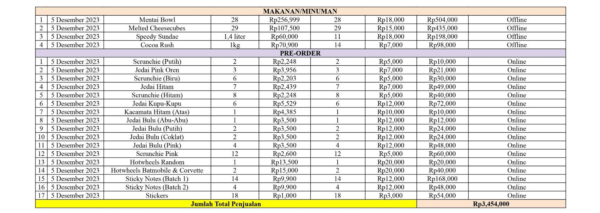
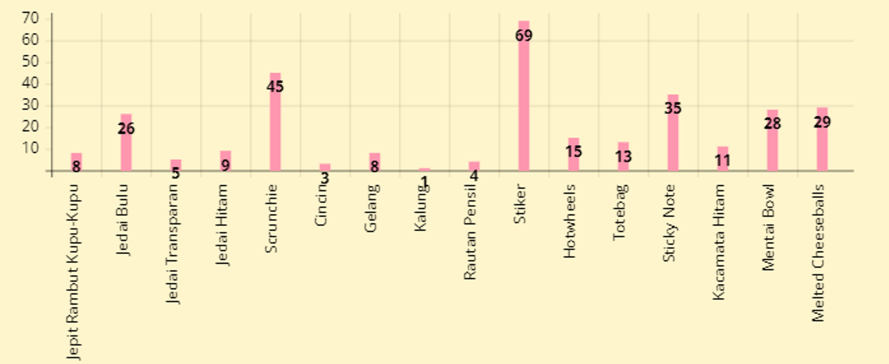
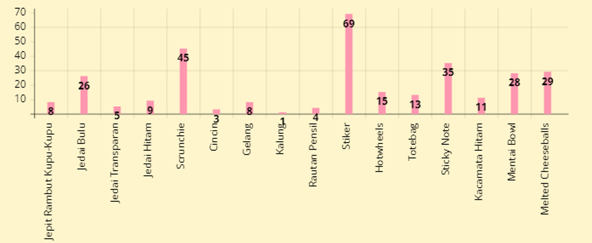

HASIL KEGIATAN
3.1 Laporan Pelaksanaan
Pada hari-H dari acara bazar Integrated Learning kelas IX-3, kami sudah siap dengan semua produk-produk yang ingin dijual, dekorasi booth, serta perlengkapan lainnya pada sekitar pukul 07.30 WIB. Kami mendapatkan pelanggan pertama sebelum waktu istirahat sehingga kami dapat ‘latihan’ sebelum adanya pasukan pelanggan dalam massa yang besar, yaitu saat istirahat 1 nantinya. Istirahat pertama telah tiba, kami mendapatkan massa pelanggan yang besar sehingga kami sedikit kewalahan, namun seiring berjalannya waktu kami menjadi terbiasa untuk melakukan segala hal dengan gesit supaya pelanggan dapat kami layani dengan sebaik mungkin.
3.2 Laporan Keuangan
Dalam data-data di bawah ini, ditunjukkan data laporan keuangan berupa modal yang dikeluarkan, penghasilan yang didapatkan, serta gaji dan keuntungan setiap anggota kelompok. Laporan keuangan bazar kami dibuat dalam Google Sheets agar pengerjaan lebih mudah dengan adanya formula-formula yang dapat menghitung suatu sel secara otomatis, sama halnya seperti aplikasi kalkulator. Laporan keuangan kami dilengkapi dengan lima data, yaitu daftar belanja, daftar barang dagangan, laporan laba/rugi, laporan pembagian keuntungan, dan laporan uang yang diterima.
Laporan Daftar Belanja


Laporan Daftar Barang Dagangan
 

Laporan Laba/Rugi

Laporan Pembagian Keuntungan
Laporan Uang yang Diterima
3.3 Statistik Jualan
 

3.4 Refleksi Kegiatan (Agama dan PPKn)
AGAMA:
Manusia mempunyai tanggung jawab moral terhadap alam yang diciptakan Tuhan serta menganggap mereka seperti saudara kita sendiri. Oleh karena itu, manusia dapat mempertanggungjawabkan melalui perkembangan ilmu pengetahuan dan bioteknologi tanpa merusak alam. Bioteknologi yang digunakan dalam proses pangan dapat membantu menyediakan berbagai macam produk baru yang digunakan untuk memenuhi kebutuhan hidup manusia. Misalnya keju, bahan baku keju merupakan hasil dari hewan ternak yaitu sapi yang hidup di peternakan dengan diberi makanan berkecukupan termasuk rumput yang diperoleh dari alam. Setiap sapi mendapat perawatan kesehatan dan nutrisi dari dokter hewan dan ahli gizi, agar menghasilkan susu yang berkualitas tinggi. Sapi adalah hewan ternak ciptaan Tuhan yang menghasilkan daging, susu dan kulitnya bisa digunakan untuk berbagai produk bahan kerajinan, pakaian juga makanan.
Dengan kemajuan teknologi susu sapi bisa diolah menjadi aneka variasi makanan yaitu seperti keju. Proses pembuatan keju melibatkan bakteri dari alam. Menurut ajaran gereja penggunaan bioteknologi harus memperhatikan prinsip-prinsip moral seperti menghormati kehidupan dan lingkungan. Bioteknologi yang digunakan secara benar dapat membantu menjaga keutuhan alam ciptaan Tuhan sesuai dengan ajaran gereja.
PPKN:
Pada saat momen pembagian kelompok dimulai, saya terus berharap untuk mendapatkan kelompok yang bisa berdinamika baik dalam pekerjaan kelompok. Setelah beberapa kali melakukan pertemuan Integrated Learning, saya merasa sudah memiliki chemistry yang begitu baik diantara kita. Dalam setiap sesi diskusi, kami dapat dengan bebas mengekspresikan opini kami masing-masing akan proses bazaar. Setiap opini yang terdapat dalam diskusi dapat tertampung dengan baik. Namun pastinya sebagai kelompok yang memiliki tujuan yang sama, kami juga sering terjebak dalam perdebatan-perdebatan kecil karena perbedaan pola pikir akan suatu masalah. Walaupun terkadang harus menghadapi masalah, hal ini tidak pernah menghalangi kami untuk terus berdinamika dengan baik sebagai sebuah kelompok. Selama proses Integrated Learning khususnya dalam pelajaran PPKn, saya bisa meningkatkan banyak sekali skill-skill yang mungkin selama ini belum bisa saya lakukan dengan baik. Salah satunya adalah belajar menerima pendapat anggota lain dan melakukan kolaborasi dengan baik. Menurut saya skill ini begitu penting untuk diasah terutama untuk kegiatan bekerja kita nanti di masa depan. Saya sangat bersyukur bisa berkelompok dengan teman-temen sekelompok saya karena walaupun dengan segala masalah yang kita alami, kita selalu bisa bangkit lagi dan terus berlari untuk mencapai tujuan kita bersama sebagai satu kelompok. Setelah lama berkolaborasi dengan kelompok saya, saya sadar bahwa nilai persatuan dalam kegiatan Integrated Learning ini begitu bermakna bagi kita semua. Dalam pelajaran PPKn, kita selalu diingatkan untuk selalu bekerja sama dengan siapapun dengan baik. Saya merasa tingkat persatuan dalam kelompok saya sudah sangat baik. Saya berharap dari kegiatan Integrated Learning ini, saya bisa menerapkan semua nilai-nilai yang sudah saya pelajari dalam pengalaman Integrated Learning ini di masa depan sebagai generasi penerus bangsa. Masa depan bangsa akan lebih cerah dengan adanya kami yang sudah bisa berkolaborasi dengan sangat baik dan mengetahui pentingnya saling menghormati pendapat satu sama lain. Semua proses yang sudah kami lewati sebagai kelompok begitu berarti dan akan terus saya kenang selamanya.
Sejak awal bazaar, saya sangat senang bisa mendapat kelompok yang mampu bekerjasama dengan baik. Sebagai kelompok, tentu saja kami juga memiliki halangan tersendiri. Kami sempat bingung akan apa yang harus dijual pada saat bazaar nanti, tentu saja dengan segala usaha yang ada, kami mampu mengambil keputusan bersama. Saya belajar banyak dari teman-teman sekelompok saya. Kerjasama sangat dapat saya rasakan secara pribadi, saya juga mampu mengasah kemampuan yang saya miliki secara lebih dalam, seperti skill memasak saya. Nilai non-akademik yang ingin disampaikan oleh sekolah dapat ditangkap dengan baik, seluruh proses dan rangkaian sebelum bazaar membuat siswa secara pribadi terlatih untuk memasuki langkah selanjutnya. Apabila dikaitkan dengan nilai dasar PPKN, berkewirausahaan adalah salah satu hal dasar yang dimiliki setiap orang. Generasi penerus seperti kitalah yang harus meneruskan harapan serta tuntutan negara. Kemajuan dari negara berpusat harap pada kita, dan sudah seharusnya dengan tekun belajar kami mengambil banyak pengalaman. Menurut saya, kelompok saya adalah kelompok yang jauh diatas kata baik. Kami terus bertekad untuk berkomitmen dan bekerjasama dengan baik dengan satu sama lain. Halangan dan hambatan bukanlah apa-apa. Melewati seluruh kesulitan dan rintangan yang ada bisa mengangkat penjualan dan angka pertemanan kita. Berkat kolaborasi yang tercampur dengan baik, hasil akhir yang kami peroleh pun baik. Pengalaman yang saya dapatkan tidak akan mampu terbayarkan oleh apapun itu, memberi kesempatan pada setiap potensial yang kami miliki merupakan hal yang sangat berharga. Saya harap, bahkan setelah semuanya selesai pun, kami tetap bisa berteman dengan baik.
Pada 5 Desember 2023, kami kelompok 6 Integrated Learning Race to Rave, melaksanakan bazaar yang diselenggarakan oleh SMP Santa Ursula Jakarta. Setelah bazaar selesai dilakukan, saya secara pribadi belajar bahwa sebagai siswi yang menduduki jenjang SMP, saya tidak hanya melakukan pembelajaran akademik secara terus-menerus, melainkan juga perlu mengembangkan kemampuan kita yang dapat diaplikasikan pada dunia masa depan nantinya, seperti kemampuan atau skill untuk berjualan, dan bertahan hidup saat memasuki dunia kerja nanti. Oleh karena itu, saya belajar dari acara bazaar ini bahwa kemampuan berjualan juga merupakan hal yang penting untuk dipelajari. Pengalaman berjualan dapat menjadi dasar dari kehidupan pada masa depan nantinya. Dalam dasar atau landasan PPKn, saya mempelajari bahwa berjualan ini dapat menjadi suatu kemampuan yang dapat diasah setiap individu sehingga dapat berbuah baik bagi bangsa dan negara kita tercinta, Indonesia. Kami sebagai generasi muda calon penerus bangsa Indonesia dapat memajukan bangsa dengan memulai dari diri kita sendiri, yaitu dengan mengasah dan mengembangkan potensial kita sehingga pada masa depan nantinya dapat membantu negara, baik dalam lingkungan pekerjaan maupun lingkungan masyarakat lainnya. Dengan belajar dengan giat dan menggapai pengalaman bermanfaat sebanyak-banyaknya, kami dapat menyimpan ilmu pengetahuan dan pengalaman tersebut untuk membantu sesama dalam peran kita, yaitu masyarakat yang berbangsa dan bernegara. Dengan itu, saya dapat menyimpulkan bahwa bazaar Integrated Learning merupakan acara yang bermanfaat dan dapat menjadi pembelajaran bagi saya dan teman-teman saya. Kami belajar bahwa kemampuan dapat menghasilkan buah yang baik bila diasah, yaitu dengan melalui masa bahagia bersama, dan masa sulit bersama sebagai anggota kelompok yang memiliki dasar nilai kerjasama.
Saya sangat senang dengan adanya IL. Karena IL kali ini kami akan mengadakan bazaar. Kegiatan wirausaha secara kecil tetapi merupakan pembelajaran yang sangat berarti bagi para siswi dalam mengelola uang sebagai modal usaha.
Waktu pembagian kelompok, saya berharap mendapat teman yang saya kenal dan akrab dengan saya. Tetapi ternyata saya tidak mendapatkan teman yang akrab dengan saya. Saya berusaha untuk mengenali mereka dengan baik dan berusaha berbuat baik.
Saya mempunyai banyak ide barang-barang yang akan dijual di bazaar, saya ceritakan ke teman-teman satu kelompok. Tetapi ide-ide saya tidak diterima oleh teman teman. Kemudian kami berdiskusi bersama untuk menentukan apa yang akan dijual. Walaupun sedikit terjadi ketidaksetujuan barang-barang yang akan dijual tetapi kita bisa menyelesaikan dengan baik.
Sesuai dengan pelajaran PPKn kami berdiskusi dan dapat menentukan barang-barang yang akan dijual di bazaar.
Sehari sebelum bazaar, kami sibuk menyiapkan barang-barang yang akan kami jual. Bazaar kami menjual makanan yang harus dijual digoreng dulu yaitu melted cheeseballs. Makanan ini sangat diminati oleh pengunjung. Pengunjung tidak sabar menunggu makanan ini matang. Mereka mengerubungi saya yang sedang menggoreng, hal ini membuat saya sangat tertekan. Karena kami hanya menggunakan kompor kecil dan penggorengan yang kecil sehingga memerlukan waktu yang lama untuk mematangkannya. Di sini saya dapat menyadari jika saya sedang membeli makanan di kantin saya harus sabar menunggu. Karena biasanya saya tidak sabar menunggu antrian, hal ini juga membikin pedagang tertekan. Kegiatan bazaar ini merupakan pengalaman yang pertama kali saya sebagai pelajar dan merupakan pengalaman yang paling berkesan yang tidak dapat dibeli menggunakan uang.
Spotify Playlist!
Ngejam sama Race to Rave yuk!
Gallery :